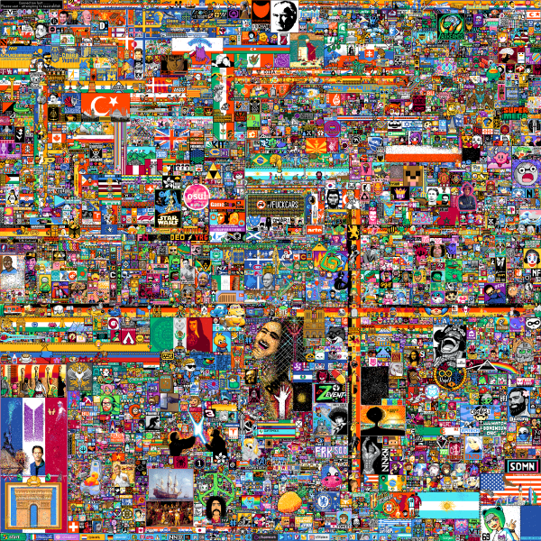
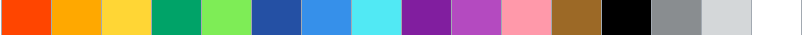
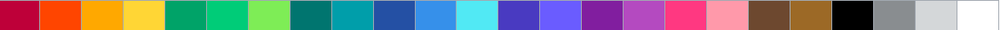
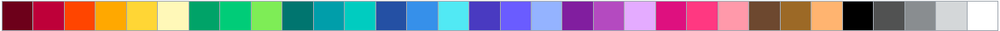

On 28 March 2022, a reboot of r/place was announced. It began on 1 April 2022, and lasted for three and a half days, including two expansions of the canvas to allow for more space. The color palette was also expanded on the second and third days. Unlike in 2017, individual subreddits immediately began to coordinate in designing pixel art, and large communities were formed on Discord and Twitch in attempts to expand existing art, replace defaced pixels, and superimpose new images over existing ones. By the end of the 3.5-day experiment, 160 million pixel changes were operated by over 10.5 million users, at an average pace of about 2 million pixels placed per hour. Of these pixel changes, about 26 million were redundant (same color as previously on the same pixel, but by a different user). These numbers, extracted from the raw data, are not as is mentioned in these erroneous articles. During the final few hours before the 2022 Place event ended, Reddit restricted users to placing only white pixels. The entire canvas was gradually filled with white space, making it end up looking the same way it began, entirely white.
References to popular culture, Internet memes and politics were commonly visible. Fandom communities participated by creating representative illustrations of their respective subcultures. Similar to 2017, much of the artwork was country flags. This included support for Ukraine in the Russian invasion of Ukraine, where Ukrainian president Volodymyr Zelenskyy was depicted with sunglasses, and the community that drew the Canadian flag struggled to properly draw the flag’s maple leaf.
Popular streamers on Twitch intervened in the event by instructing their viewers to quickly draw logos and symbols, often over existing images. The streamer Félix Lengyel, better known online as xQc, peaked with 233,000 concurrent viewers on his stream because of the event, a personal record. Lengyel's viewers would often get banned by Reddit admins, and Lengyel said that he had received more death threats in a single hour than he had received in six years of streaming.
- Color palette of 2022(day1)

- Color palette of 2022(day2)

- Color palette of 2022(day3&4)
